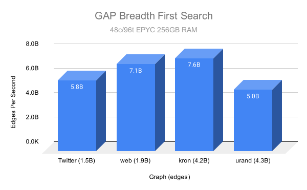
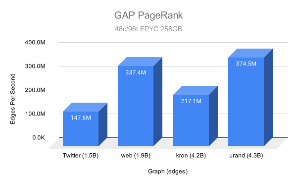

Algorithms
OneSparse leverages the SuiteSparse GraphBLAS library and the LAGraph suite of graph algorithms and integrates them with Postgres. Using SuiteSparse's state of the art Sparse Linear Algebra Just-In-Time (JIT) compiled kernels, OneSparse can leverage CPUs, GPUs, and any future architectures without you having to re-target your code.
The algorithms shown here come from the LAGraph library, they are already complete and well tested implementations of common graph algorithms. The algorithms shown here are just the beginning, there are many more to come, including versions that leverage CUDA GPUs.
Example Graphs
To show off the algorithms we will need some sample graphs. There are multiple ways to construct graphs in OneSparse.
From a Matrix Market file
The SuiteSparse Matrix Collection contains many graphs of all different shapes and sizes and publishes them in the Matrix Market format. The "karate" graph shown here is a common test graph for documentation purposes. Let's load the graph into a materialized view to make its use from SQL very easy:
create materialized view karate as select mmread('/home/postgres/onesparse/demo/karate.mtx') as graph;
select draw(triu(graph),
reduce_cols(cast_to(graph, 'int32')),
false, false, true, 0.5, 'The Karate Graph')
as draw_source from karate \gset
\i sql/draw_sfdp.sql
Matrix Aggregation
Graph an be constructed by aggregating an adjacency matrix with
matrix_agg:
create table edge_data (
i bigint,
j bigint,
v integer
);
insert into edge_data (i, j, v) values (1, 2, 3), (1, 3, 4), (2, 3, 1), (3, 1, 8);
create materialized view edge_data_view as
select matrix_agg(i, j, v) as graph from edge_data;
select draw(triu(graph),
reduce_cols(one(graph)),
false, true, true, 0.5)
as draw_source from edge_data_view \gset
\i sql/draw_sfdp.sql
SQL Queries
Random Graphs
We'll use some random weighted graphs for demonstration purposes as well, one directed and one undirected.
create materialized view rgraph as select triu(random_matrix(8, 8, 28, 1, 10, false, 0.22), 1) > 0 as graph;
create materialized view urgraph as select random_matrix(8, 8, 28, 1, 10, true, 0.22) > 0 as graph;
select draw(triu(graph), reduce_cols(one(graph)), true, true, true, 0.5, 'Random Weighted Directed Graph') as col_a_source from rgraph \gset
select draw(triu(graph), reduce_cols(one(graph)), true, false, true, 0.5, 'Random Weighted Undirected Graph') as col_b_source from urgraph \gset
\i sql/draw_2col.sql
Level BFS
Level BFS exposes the depth of each vertex starting from a given source vertex using the breadth-first search algorithm. See https://en.wikipedia.org/wiki/Breadth-first_search for details.
select draw(triu(graph), (select level from bfs(graph, 1)), false, false, true, 0.5) as col_a_source from karate \gset
select draw(triu(graph), (select level from bfs(graph, 1)), false, false, true, 0.5) as col_b_source from urgraph \gset
\i sql/draw_2col.sql
Parent BFS
Parent BFS returns the predecessor of each vertex in the BFS tree rooted at the chosen source. It is also based on https://en.wikipedia.org/wiki/Breadth-first_search.
select draw(triu(graph), (select parent from bfs(graph, 1)), false, false, true, 0.5) as col_a_source from karate \gset
select draw(triu(graph), (select parent from bfs(graph, 1)), false, false, true, 0.5) as col_b_source from urgraph \gset
\i sql/draw_2col.sql
Benchmarks

Single Source Shortest Path
select draw(triu(graph), sssp(graph, 1::bigint, 1), true, true, true, 0.5) as col_a_source from rgraph \gset
select draw(triu(graph), sssp(graph, 1::bigint, 1), true, false, true, 0.5) as col_b_source from urgraph \gset
\i sql/draw_2col.sql
Benchmarks

Page Rank
PageRank assigns an importance score to each vertex based on link structure. For details see https://en.wikipedia.org/wiki/PageRank.
select draw(triu(graph), pagerank(graph)*100, false, false, true, 0.5) as draw_source from karate \gset
\i sql/draw_sfdp.sql
Benchmarks

Triangle Centrality
Triangle centrality counts the number of triangles incident to each vertex. This measure relates to the clustering coefficient https://en.wikipedia.org/wiki/Clustering_coefficient.
select draw(triu(graph), triangle_centrality(graph)*10, false, false, true, 0.5) as draw_source from karate \gset
\i sql/draw_sfdp.sql
Benchmarks
Betweeness Centrality
Betweenness centrality measures how often a vertex appears on shortest paths between others. https://en.wikipedia.org/wiki/Betweenness_centrality.
select draw(triu(graph), betweenness(graph, ARRAY[1,32]::bigint[]), false, false, true, 0.5) as draw_source from karate \gset
\i sql/draw_sfdp.sql
Benchmarks

Square Clustering
Calculates the square clustering coefficient for each vertex. https://en.wikipedia.org/wiki/Clustering_coefficient.